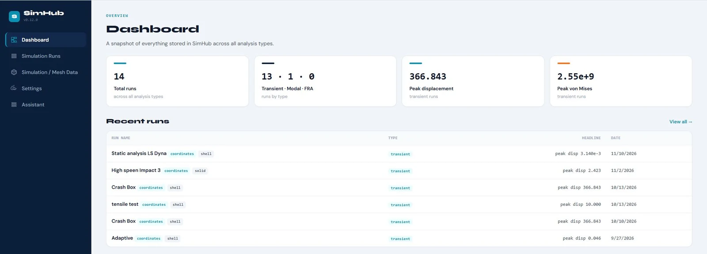
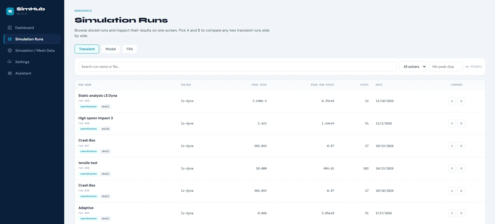
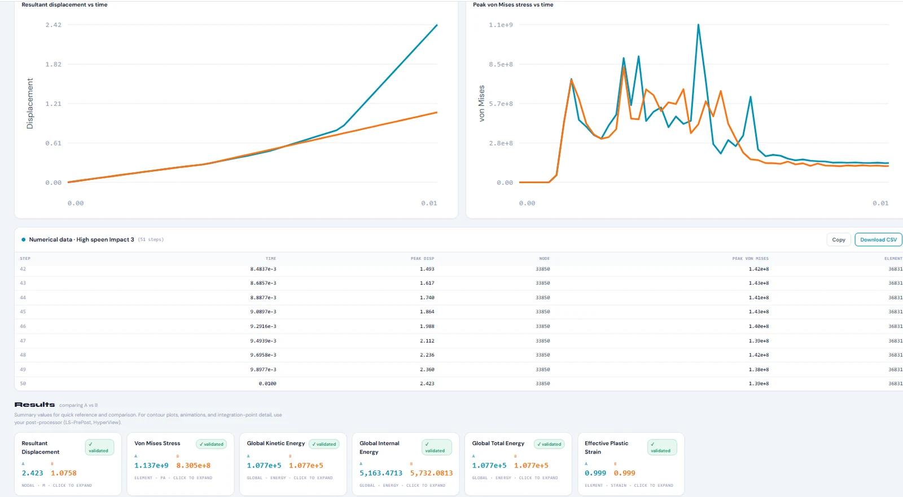
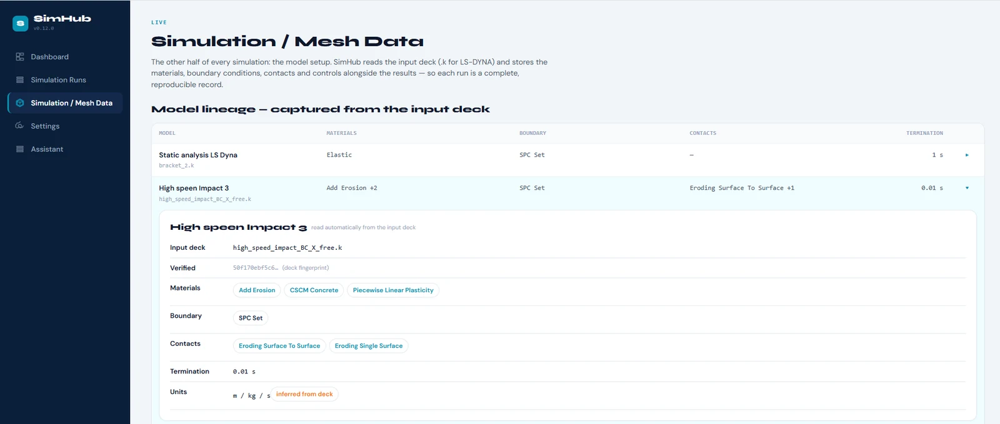
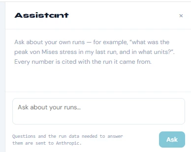

Every LS-DYNA run,
findable and comparable
SimHub keeps a searchable record of your simulation runs: key results, input deck and units, next to each other. A small agent does the extraction on your machine. Only a ~50 KB summary per run is uploaded, and your d3plot files stay where they are.
We'll only use your email to contact you about SimHub. You'll confirm by email (double opt-in). Privacy policy

The problem
FEA results live in folders nobody can search
You run variant after variant. A few weeks later the question is simple ("which run had the lower peak stress, and with which material card?") and answering it means reopening files one by one.
- Results spread across local drives and cluster scratch, named by hand
- Comparing two runs means loading both in the post-processor again
- Result files get large, so nobody wants to copy them around or keep every variant
- The input deck that produced a result isn't recorded next to it
How it works
Local extraction, a small summary, a browser dashboard
The heavy lifting happens on your machine. The server only ever sees the summary.
Extract locally
The SimHub agent (Python) runs on your workstation. It reads the LS-DYNA d3plot results and the .k input deck where they already are. The result files are never uploaded.
Upload a ~50 KB summary
The agent sends the extracted summary for that run to the SimHub server in Germany, authenticated with your personal API key. It's stored in your account, and only you can see it.
Inspect and compare
Sign in at app.simhub-ai.de. Search and filter your runs, put two of them side by side, check which deck they came from and export the numbers as CSV.
Features
What's in v0.12 today
Everything below is live in the private beta. No mock-ups: these are screenshots of the app.
A run list you can actually search
Every uploaded run shows up with its solver, peak displacement, peak von Mises stress, number of steps and date.
- Search by run name or file
- Filter by solver and minimum peak displacement
- Pick any two runs as A and B to compare

Two runs, side by side
Resultant displacement and peak von Mises stress over time on shared axes, the step-by-step numbers, and all six result values for A and B next to each other.
- Copy the table or download it as CSV
- A per-step numbers table under the charts
- No colour-coded verdicts. SimHub shows the numbers and the judgement stays with you

Input deck traceability
SimHub reads the .k input deck along with the results, so each run records the model that produced it.
- Materials, contacts and boundary conditions
- Termination time and unit system, marked when inferred from the deck
- A deck fingerprint, so you know which file it was

Six validated result types
Displacement, von Mises stress (solid and shell), kinetic, internal and total energy, and effective plastic strain, each checked against LS-PrePost.
Search and filters
Find a run by name or file, narrow the list by solver or peak displacement, and stop guessing from folder names.
A/B comparison
Time histories on shared axes and key values next to each other. Differences are shown, not judged.
CSV export
Take the numbers into Excel, Python or your report. The data stays yours.
Deck traceability
Materials, contacts, boundaries and units stored per run, read straight from the .k file.
Local-first and private
Result files stay on your machine. Secure, EU-hosted sign-in, personal API keys for the agent, and each user sees only their own runs.
Optional · AI assistant
Ask questions about your own runs
For example: "What was the peak von Mises stress in my last run, and in what units?" The assistant looks it up in your stored runs and tells you where the number came from.
- off by default
Opt-in. The assistant does nothing until you switch it on.
- cites runs
Every number names its source run, so you can check it in the run itself.
- honest units
Units are stated as they are. If the unit is inferred or unknown, it says so.
- no verdicts
It never gives engineering verdicts. No "this design passes", no "this run is better". That call stays with the engineer.
- disclosed
When it's enabled, your question and the run data needed to answer it are sent to Anthropic to generate the answer. The app says this right where you type.

Solver support
LS-DYNA today. Abaqus next.
SimHub reads native LS-DYNA output and input files: no export step, no format conversion.
Not there yet: team sharing and project workspaces, Abaqus and any solver other than LS-DYNA. For now every account is a single user and sees only their own runs.
Private beta
Help shape the first pilots
SimHub is preparing its first pilots. Leave your email and we'll get in touch about access. You'll be talking directly to the person building it, and your feedback decides what comes next.
We'll only use your email to contact you about SimHub. You'll confirm by email (double opt-in). Privacy policy
Built for simulation engineers in small teams, consultancies and research groups.